Simulation Example
In this example, we will step through the simulation of an RLC network. this example will highlight a few things about simulation that you need to be aware of.
The circuit we will simulate will be a series 100 nH Inductor↓, 1 pF Capacitor↓, and 50 Ohm Resistor↓. We will simulate with a step voltage applied to the input to the circuit through a Voltage Step Generator↓ and probe initially the voltage at the 50 Ohm termination Resistor↓.
When we open PySIApp, we have a blank canvas:

We invoke Add Part↓:
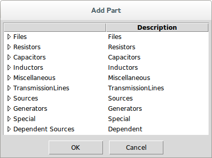
Select the Generators category, and select the One Port Voltage Step Generator↓:

For now, we accept the default properties which state that the step generator will generate a Waveform↓ that starts at -100 ns, runs for 200 ns (i.e. ends at 100 ns) which is 0 V until 0 s after which it jumps to 1 V for the duration.
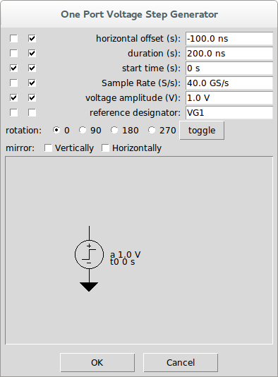
Press OK and left-click to place the part in the schematic and drag the part to where you want it:
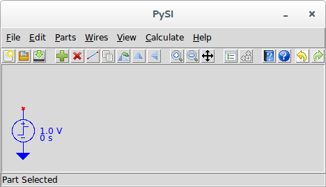
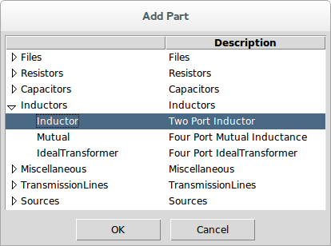
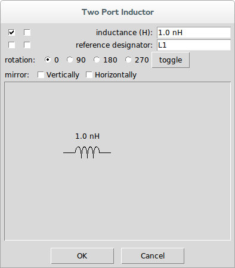
Double click in the inductance part property entry box and type 100n and hit enter:
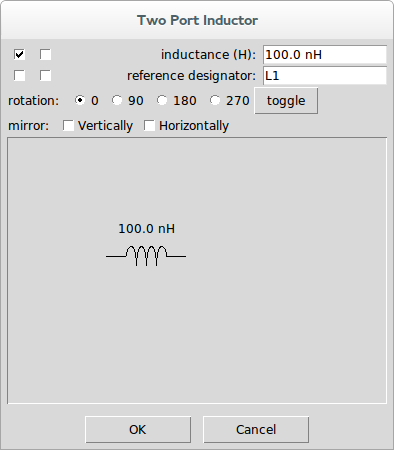
Press OK, click in the schematic and hold the left mouse button down to drag the part to the desired location to the right of the voltage generator:
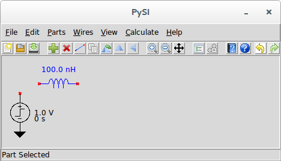
Repeat for a two-port, 1 pF Capacitor↓ and a one-port 50 Ohm Resistor↓.
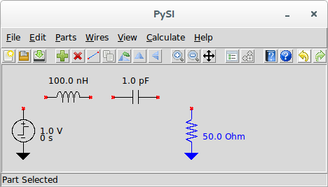
Now connect all of the devices using Add Wire↓ commands. We start wire drawing by invoking Add Wire↓ and we observe that the cursor turns into a pen, and we see Drawing Wires in the status bar. We left click on the top of the voltage generator and see a dot form at the generator connection point. We move the mouse up a bit and we see a rubber band wire form between the top of the generator and the cursor and we left click again. A line now extends upward from the voltage generator to a dot. We move the cursor to the right to the left side of the inductor and left click again. We right click to end the wire and move to the mouse to the right side of the inductor. There is no rubber band line because we completed the drawing of the last wire, but left clicking on the right port of the inductor places another dot and begins the next wire. We move the mouse to the left side of the capacitor, observing the rubber band line, and left click. Right clicking ends that wire and we move on to the connection of the right side of the capacitor to the top of the one-port resistor to ground. When we complete this wire, we right click twice to end drawing wires. Notice that the cursor returns to an arrow and the status bar message shows nothing.
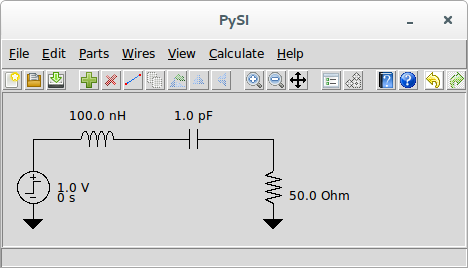
If you want, experiment with changing the wires by left clicking on a wire vertex and dragging:
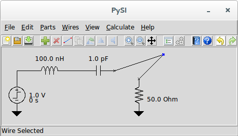
or by clicking in the middle of a wire and dragging:
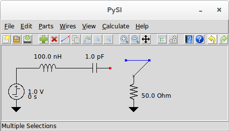
Now, use Add Output Probe↓ to add some probing points to the circuit. When we invoke Add Output Probe↓, we see the part properties dialog for the Output Probe↓:
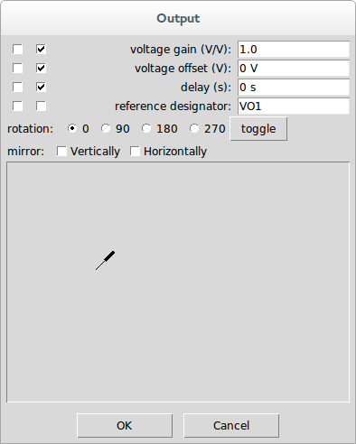
Click the leftmost checkbox for the reference designator (so it shows in the schematic), and double click in the reference designator entry box and type Vin followed by the enter key:
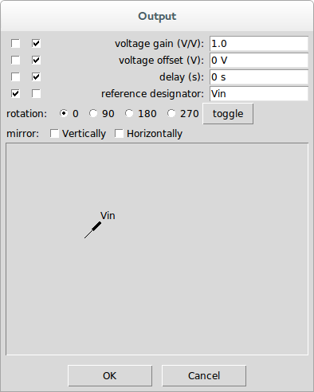
Press OK and place the probe on the wire connecting the voltage source to the inductor:
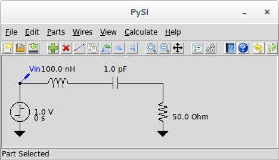
If you want to make it look better, use Flip Horizontally↓ to change the orientation.
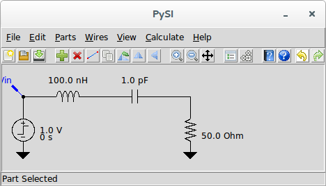
Use Pan↓ to pan the drawing a bit to the right.
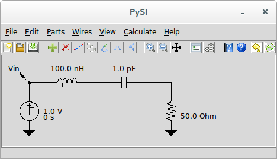
Select the Output Probe↓ and use Duplicate Part↓ to place another probe at the resistor. Use Flip Horizontally↓ to change the orientation, and Edit Properties↓ to change the reference designator to Vout.

Notice now that Calculate↓ and Simulate↓ are now enabled.
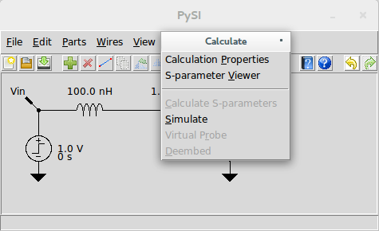
Go ahead and invoke Simulate↓ and let’s see what happens. After a few seconds of calculation, we see the Simulator Dialog↓.
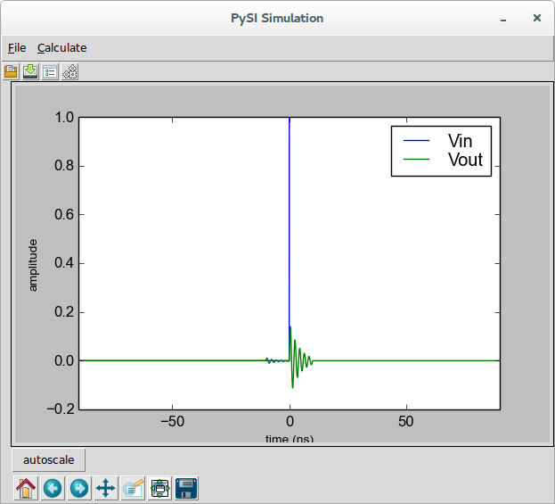
Let’s zoom in on the green Vout waveform to see what happened:
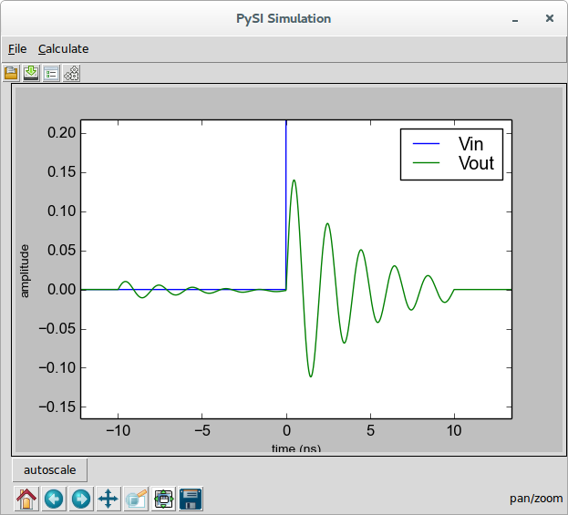
This is, of course nonsense, so let’s understand what happened here and how the simulator works. Understand this, we need on more set of information - the Calculation Properties↓, where we see:

The simulator operates by generating transfer parameters that convert waveforms generated from sources, in this case the step generator, into the output waveforms. In this case, since we have only one source, these are essentially two filters that are applied to the source waveform, one filter converting the source to Vin, the other converting the source to Vout.
These filters are specified with a frequency response of 400 points with 50 MHz spacing out to 20 GHz. If s-parameter files had appeared in the schematic, all s-parameters would be resampled to this specification during calculation of the transfer parameters.
The net effect of the transfer parameters calculation is two finite-impulse response (FIR) filters whose impulse response length is 20 ns. In the accompanying book that describes the theory, we explain all about this, but suffice it to say that the filter impulse response is 20 ns long with time 0 appearing in the middle (i.e. has 10 ns of filter duration prior to time zero and 10 ns after time zero).
Since FFT methods are utilized, and since the FFT assumes that the frequency response represents the impulse train response (as opposed to a single impulse response), we have an opportunity for time-aliasing effects, which we’ve certainly created. To see this, invoke View Transfer Parameters↓ from the Simulator Dialog↓ and we see:
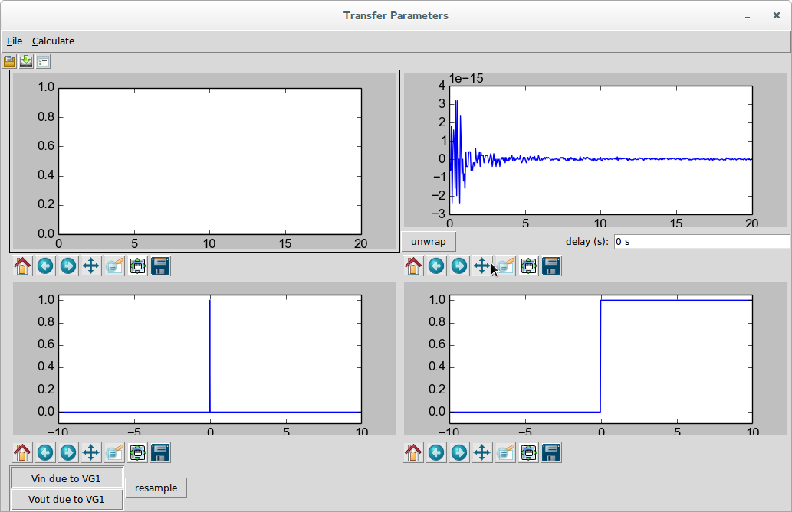
This is the trivial filter that converts the source waveform VG1 into Vin. this filter is, of course, a single impulse as these two are the same.
Selecting Vout due to VG1 shows something more interesting:

Here we see that the filter is highly resonant, which is not surprising. We see this in the magnitude response in the upper left, to some degree from the 180 degree phase transition in the phase response in the upper right, in the impulse response in the lower left which is clearly not settled at the end, and we see the problem the most clearly from the step response in the lower right.
Because of the FFT methods utilized, we see that the unsettled response to the right continues from the left (at negative time) and is clearly giving us the wrong answer.
In the future, we might provide better or automated ways of dealing with this, but this is a common problem, especially when s-parameters are used, and is worth seeing and dealing with manually.
Clearly, 20 ns worth of impulse response is insufficient. Let’s use something like 100 ns. So we edit the Calculation Properties↓, change the impulse response length to 100 ns, close the dialog returning to the Simulator Dialog↓, and recalculate. After adjusting the zoom a bit, we have:
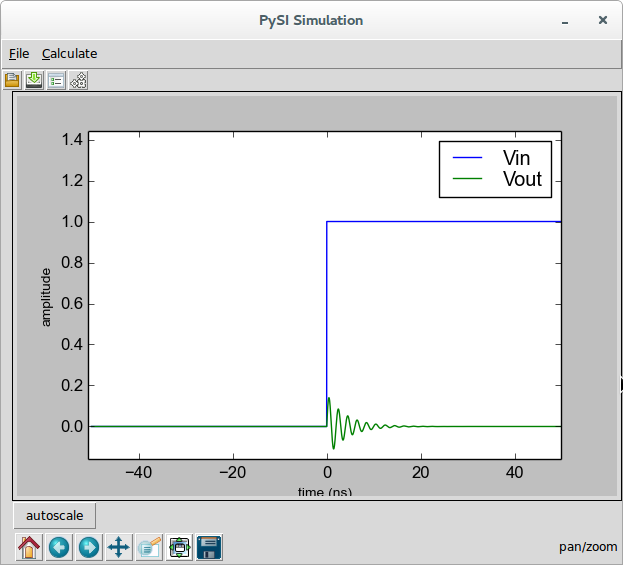
This is clearly a much better result. You can examine the transfer parameters to see that the 100 ns impulse response did the trick.
Examining the calculation properties we see the implications of the 100 ns impulse response:
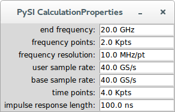
It means that two thousand frequency points were required at 10 MHz spacing. If this system were provided through s-parameter measurements, this would be the frequency resolution required to get a good time-domain simulation - regardless of what kind of simulator were employed.
As a final note, note that in the original, incorrect simulation, the waveform result was almost 200 ns long (it was 180 ns to be precise) and that the final result is 100 ns long. This is because the impulse response length is removed half from the front and half from the back of the waveform. This is explained in the accompanying book. This means that the input waveform must be sized properly to give you the result you want. If in my simulation, my desire was to see the step response starting at -10 ns until 30 ns, and understanding that the filter takes 50 ns from the front and back, we’d want an input waveform that starts at -60 ns and ends at 80 ns, for a 140 ns duration.
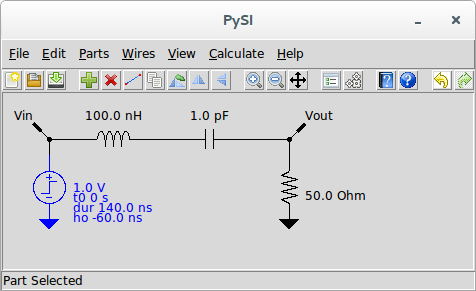